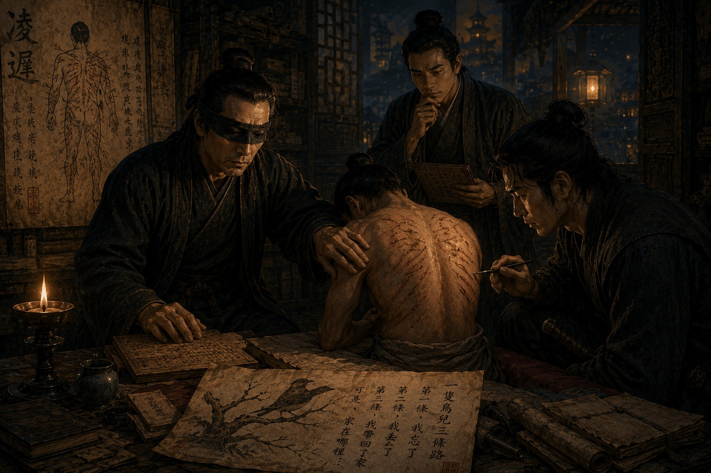

Дело о тысяче порезов

Некоторые дела начинаются с доноса, некоторые — с крика у городских ворот, некоторые — с тела, найденного в воде или под стеной старого храма. Дело о тысяче порезов началось с песни. Я услышал ее ранним утром в приемной Управления, когда лекари осматривали чиновника Министерства Каналов, доставленного туда до рассвета.
Чиновник был жив, в сознании и, как ни странно, почти спокоен. На его теле обнаружили множество мелких надрезов, неглубоких и аккуратных, словно кто-то не хотел причинить ему настоящего вреда, но хотел оставить след. Пока лекари спорили, можно ли считать это нападением, человек едва слышно напевал детскую песенку про пташку, летевшую над тремя дорогами. Пташка первую дорогу забыла, вторую потеряла, третью домой принесла, а где ее гнездо — не помнил никто.
Сначала я не придал песне значения. В столице было достаточно уличных песен, считалок и старых напевов, которые всплывали в голове у больного человека без всякой причины. Но через три дня такую же песню напевал храмовый писец, найденный утром с такими же порезами на руках, груди и плечах. А еще через неделю ее услышали от старого цензора, который много лет занимался изъятием вредных трактатов и теперь утверждал, что всю ночь считал отсутствующие строки в книге, которой никогда не видел.
Со мной, как обычно, находились Цзянь и Ло. После дела о потерянных именах мы стали осторожнее даже в мелочах. Ло больше не полагался только на лица и движения людей, а Цзянь начал носить при себе не одну, а три связки тонких деревянных пластинок для рельефных записей. Я по-прежнему слышал голос Ло, но не видел его жестов; Ло по-прежнему не слышал моих слов, если не смотрел на меня; Цзянь по-прежнему видел и слышал нас обоих, но не мог произнести ни звука. Поэтому в каждом нашем разговоре была задержка, как в старом колоколе, чей удар долго идет через бронзу, прежде чем становится звоном.
Сначала следовало исполнить цзянь — наблюдение. Ло осматривал пострадавших и описывал вслух то, что могло быть важно для меня: расположение порезов, выражение лица, движения рук, следы на одежде. Цзянь записывал показания, сверял должности, сопоставлял даты и время. Я допрашивал людей и слушал то, что они сами не замечали: дыхание перед ответом, паузы после имени, страх, спрятанный не в словах, а между ними.
Очень скоро выяснилось, что пострадавшие не были случайными людьми. Один служил в Министерстве Каналов и имел доступ к старым схемам подземных ходов. Другой работал в храмовом архиве и участвовал в переписи утраченных родословных. Третий был бывшим цензором, четвертый — чиновником Палаты Ритуалов, пятый — преподавателем, который много лет назад составлял списки запрещенных книг. Между ними не было близкого знакомства, родства или общего заговора, но всех связывала одна тихая обязанность: они хранили, исправляли, уничтожали или запрещали память.
Повреждения тоже были похожи. Не в каждой линии, не в каждом месте, но в общем порядке. Ло, осмотрев пятого пострадавшего, долго молчал, а потом произнес, не поворачиваясь ко мне:
— Это не ярость.
Цзянь коснулся моего запястья, предупреждая, что Ло смотрит не на меня, а на тело лежащего человека.
— Что ты имеешь в виду? — спросил я.
Ло ответил после короткой паузы:
— Тот, кто режет в ярости, хочет уничтожить. Тот, кто режет так, хочет пересчитать.
Цзянь быстро вырезал на пластинке одно слово и вложил мне в руку.
«Пересчитать».
Я провел пальцем по насечкам и впервые почувствовал, как холодная мысль начинает складываться в форму. Эти порезы действительно были похожи не на наказание, а на счет. Но что именно считали пострадавшие, никто из них объяснить не мог.
На шестой день мы допросили первого чиновника повторно. Он лежал в своей комнате, укрытый тонким одеялом, и говорил почти спокойно. По его словам, ночью он проснулся от ощущения, будто должен что-то вспомнить. На столе лежал нож для бумаги. Он взял его и начал делать надрезы, не чувствуя боли и почти не понимая, что происходит. С каждым движением к нему возвращались обрывки документов: старые схемы каналов, списки выемок, распоряжения о закрытии подземных помещений, имена мастеров, которых потом не оказалось ни в одной ведомости.
— Вы сами это делали? — спросил я.
— Да.
— Кто приказал?
— Никто.
— Почему вы остановились?
Он долго молчал, а затем ответил:
— Песня закончилась.
После этих слов я попросил его повторить песню. Он сначала отказался, потом все же запел тихим, почти детским голосом. Пташка летела над тремя дорогами, первую забыла, вторую потеряла, третью домой принесла. Но на этот раз появился еще один куплет, которого я раньше не слышал. В нем говорилось, что у пташки было три крыла, но одно отдали ветру, другое — воде, третье — тем, кто забыл дорогу домой.
Цзянь перестал двигаться еще до конца песни. Я не видел его лица, но услышал, как остановилась кисть. Ло, разумеется, не слышал напева, однако заметил реакцию Цзяня и положил руку на рукоять меча. В нашей троице страх одного почти всегда становился сигналом для остальных.
На следующий день началось сы — осмысление. Цзянь ушел в архивы Управления, Ло отправился к семьям пострадавших, а я остался в приемной, где допрашивал лекарей и слуг. К вечеру мы собрали первые выводы. Никто не проникал в дома пострадавших. Замки не были взломаны. Слуги не видели чужаков. Яды в еде и питье не обнаружили. Во всех случаях человек наносил порезы себе сам, ночью или на рассвете, в состоянии, похожем на сон.
Но самоповреждение не делало дело простым. Иногда человек сам становится орудием чужой воли, даже если рядом нет руки, направляющей нож. Иногда приказ живет не в голосе, а в памяти. И чем больше я слушал пострадавших, тем сильнее мне казалось, что все они вспоминали не свои тайны, а чужие.
Ло вернулся поздно. Он тяжело дышал, хотя редко позволял себе показывать усталость. Цзянь помог ему объяснить увиденное через короткие жесты и рельефные пластинки. Одна из жертв оказалась человеком, которого Ло знал много лет. Они встречались на службе, вместе охраняли приемы, однажды даже сопровождали одного и того же посла из западных земель. Но в тот день Ло посмотрел на него и не узнал. Потом узнал. А спустя несколько мгновений снова потерял уверенность.
Для носителя Дара Намерения это было страшнее раны. Ло привык доверять лицу, движению, положению плеч, напряжению пальцев, направлению взгляда. Его мир держался на том, что человек выражает себя телом даже тогда, когда говорит ложь. Если лицо начинало ускользать из памяти, значит, под ногами исчезала земля.
Цзянь тем временем нашел закономерность в документах. Все пострадавшие были связаны не между собой, а с разными слоями одного длинного дела, которое никогда не существовало как единое дело. Одни участвовали в уничтожении старых трактатов. Другие переписывали указы, где Школа Единого Пути называлась вредной. Третьи занимались исправлением родословных. Четвертые имели доступ к спискам людей, стертых из ведомостей. Эта связь шла не только через должности, но и через преемников, учеников, наставников и наследников архивных обязанностей.
Когда Цзянь вложил мне в руку пластинку с последним выводом, насечки были глубокими и неровными. Это означало, что он писал быстро и был взволнован.
«Они не родственники. Они наследники действий».
Я долго водил пальцами по этим словам. Потом понял, что он прав. В Империи вина редко передавалась только кровью. Гораздо чаще она передавалась должностью, печатью, списком обязанностей, ключом от архива или правом решать, какую книгу оставить, а какую объявить опасной.
В тот вечер я снова услышал песню. Ее напевал уличный мальчишка возле чайной, куда я пришел, чтобы дать голове немного покоя. Голос был высокий, неуверенный, но мелодия совпадала. Пташка летела над тремя дорогами. Первую забыла. Вторую потеряла. Третью домой принесла. Я сидел, держа чашку обеими руками, и впервые за долгое время хотел, чтобы Ло мог услышать хотя бы это.
— Красивая песня, — произнес человек за соседним столом.
Я сразу узнал голос.
Он звучал слишком спокойно. Не громко, не тихо, не скрытно, а именно так, будто человек давно знал, где я сяду и когда мальчик начнет петь. Я не повернулся к нему. В этом не было смысла. Я был слеп, а он, как я уже знал, умел исчезать даже из памяти зрячих.
— Вы снова здесь, — сказал я.
— Я никуда не уходил.
— Вы знаете, кто наносит порезы?
Он помолчал.
— Никто.
— Люди не режут себя десятками одинаковых надрезов без причины.
— Разве я сказал, что причины нет?
Я почувствовал раздражение, но подавил его. В прошлые встречи он говорил загадками, и каждый раз мне хотелось приказать Ло схватить его. Но Ло в этот вечер сидел у входа, и я знал, что если незнакомец захочет уйти, то уйдет раньше, чем мой страж поймет, кого именно надо остановить.
— Что означает песня? — спросил я.
— Сейчас почти ничего.
— А раньше?
Он ответил не сразу. За окнами чайной скрипнула тележка, кто-то засмеялся у стойки, мальчик на улице повторил последний куплет. Только после этого незнакомец произнес:
— Раньше она показывала дорогу.
— Куда?
— Домой.
Это слово прозвучало так тихо, что другой человек мог бы его не услышать. Но я услышал. И почему-то именно оно испугало меня сильнее, чем порезы на телах чиновников.
— Вы причастны к этому делу?
— Да.
— Вы режете людей?
— Нет.
— Тогда как именно вы причастны?
Он слегка вздохнул.
— Я помню песню дольше, чем они.
Я услышал, как Ло у входа сделал шаг в нашу сторону. Он, конечно, не слышал разговора, но по моему лицу, дыханию или положению тела понял, что что-то изменилось. Цзянь, сидевший неподалеку, быстро коснулся моего рукава: одно короткое движение, вопрос. Я не ответил.
— Линчи, — сказал незнакомец после паузы, — часто переводят как тысяча порезов. Но это неточно. Важно не число. Важно то, что целое тело превращают в множество отдельных частей, и человек умирает не от одного удара, а от постепенного разделения самого себя.
— Вы говорите о казни.
— Нет, господин следователь. Я говорю об Империи.
После этих слов он поднялся. Ло двинулся к нему, но остановился почти сразу. Позже Цзянь объяснил мне прикосновениями, что незнакомец вышел через боковую дверь, хотя Ло смотрел прямо на нее. Не побежал, не спрятался, не воспользовался толпой. Просто оказался там, где его уже нельзя было задержать. Это было хуже любого бегства.
На следующий день настало дуань — решение, хотя впервые за годы службы мне казалось, что это слово стало слишком тяжелым для того, что я мог сделать. Мы установили, что порезы пострадавшие наносили себе сами. Мы установили, что внешнего нападавшего не было. Мы установили, что повреждения появлялись после снов, в которых люди слышали одну и ту же песню или вспоминали документы, связанные с уничтожением альтернативных учений о Дарах.
Но установить виновного мы не смогли. Если преступник существовал, он не оставлял следов. Если преступления не было, совпадений было слишком много. Каждый пострадавший вспоминал именно тот слой памяти, к уничтожению которого был причастен сам или через свою должность. Один вспоминал вырезанные имена. Другой — сожженные трактаты. Третий — приказ, где слово «спор» впервые заменили словом «ересь». Четвертый — список учеников Школы Единого Пути, переданный в Палату Ритуалов много лет назад.
К вечеру Цзянь принес последнюю пластинку. Он вырезал ее медленно, поэтому я прочитал без труда.
«Каждый порез соответствует утрате».
Я не спросил, как он это понял. Иногда Дар Памяти говорит не доказательствами, а тяжестью совпадений. Для суда этого было мало. Для следователя — достаточно, чтобы не спать ночью.
Официальный отчет получился коротким. Серию повреждений признали самоповреждениями, вызванными нервным расстройством у лиц, несущих длительную архивную и ритуальную службу. Никаких признаков заговора, ереси или нападения обнаружено не было. Пострадавшим предписали отдых, молитвы и временное отстранение от работы с закрытыми документами. Управление Безупречной Гармонии осталось довольно таким выводом, потому что больше всего власть любит дела, в которых нет виновного.
Но я не был доволен.
В ту ночь я долго сидел у открытого окна и слушал, как где-то далеко кто-то снова напевает песню про пташку и три дороги. Возможно, это был ребенок. Возможно, пьяный лодочник. Возможно, мне уже просто чудился знакомый напев в любом скрипе ворот и в любом плеске воды. Я не знал. Но с тех пор эта песня больше не покидала меня.
Раньше я думал, что Разделение похоже на удар меча. Один ритуал, один указ, одно решение, после которого мир стал таким, каким мы его знаем. Теперь мне начинало казаться, что я ошибался. Некоторые вещи уничтожают иначе: строка за строкой, имя за именем, книга за книгой, память за памятью. Так не убивают сразу. Так долго и терпеливо разрезают живое целое на части, пока оно само не начинает верить, что никогда не было единым.
Возможно, именно это и называется тысячей порезов.